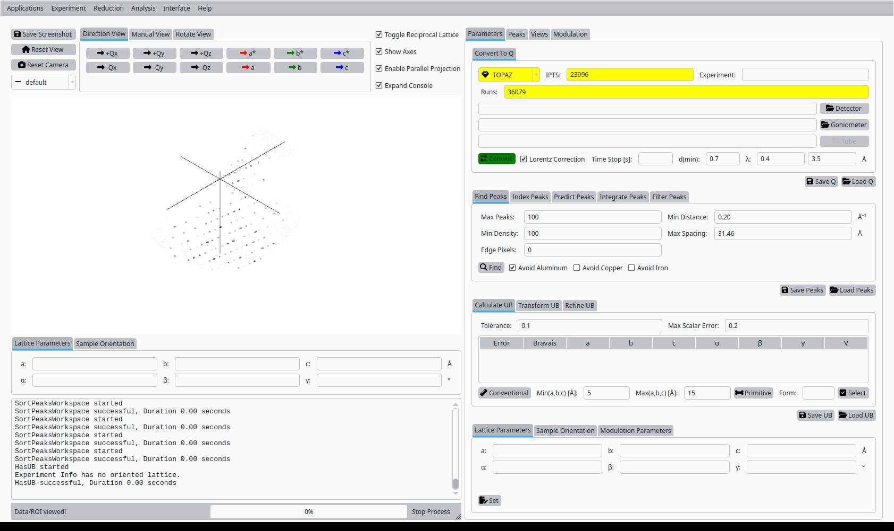
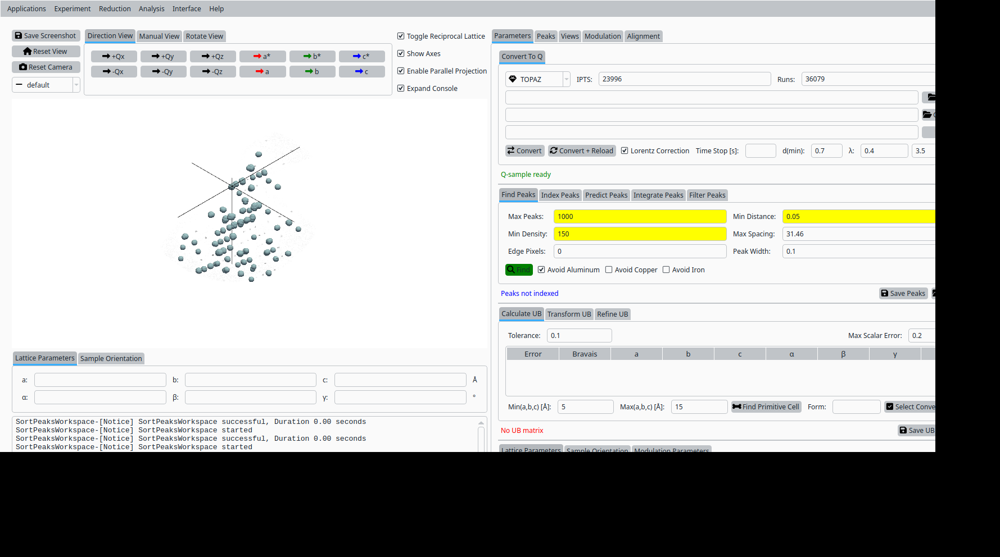
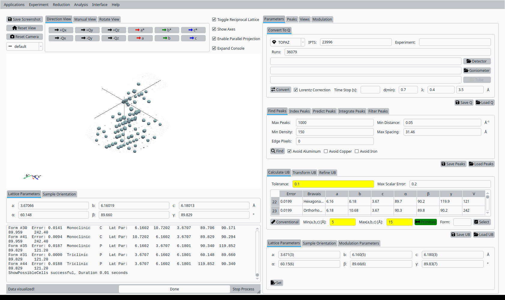
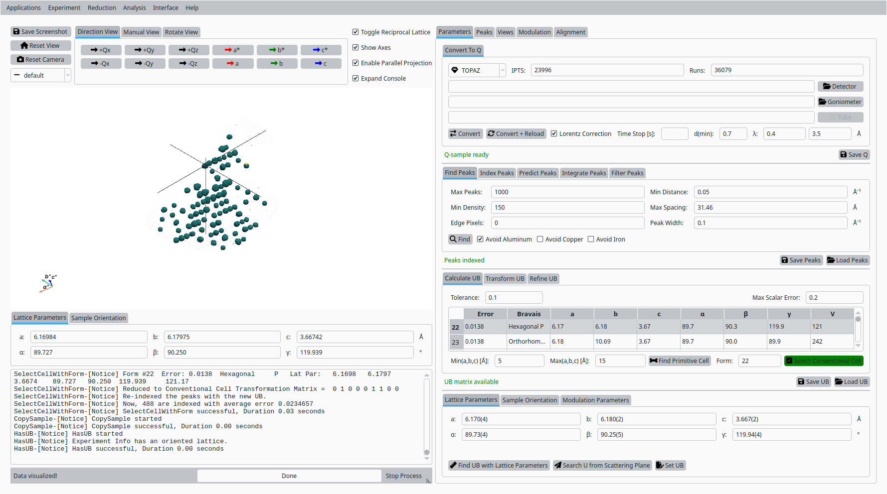
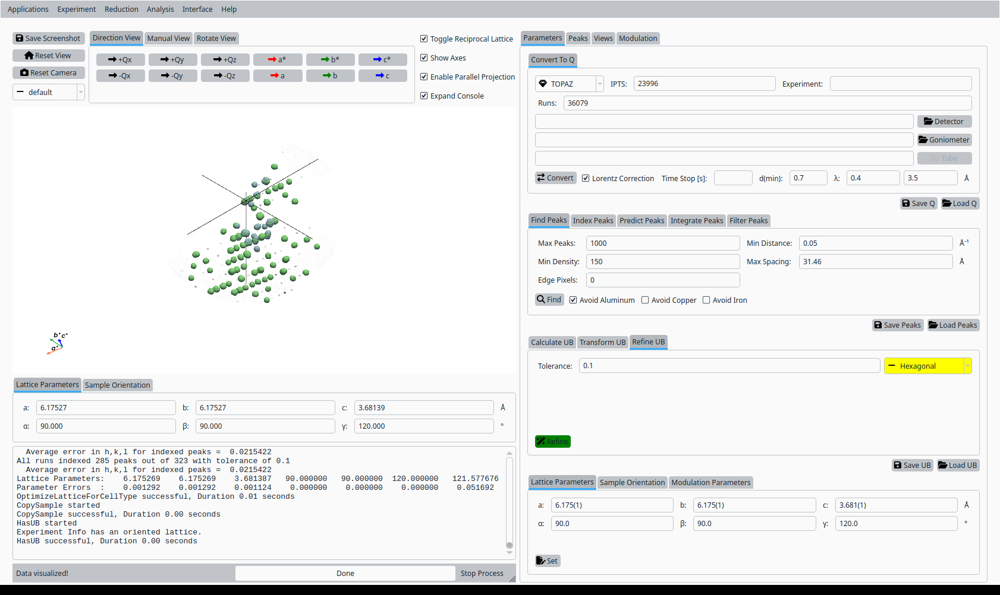
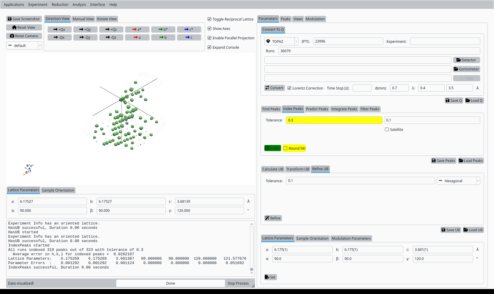
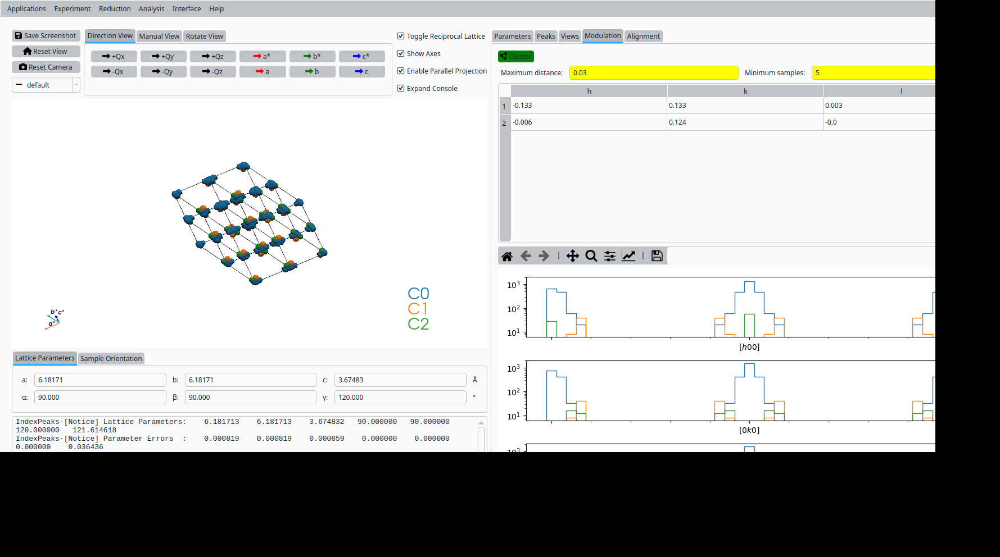

Modulation Tools with MnCoGeAs Data#
This tutorial demonstrates how to use the UB tools in NeuXtalViz to run the TOPAZ modulation scenario for the MnCoGeAs example.
Step 1: Convert to Q#
In the Convert to Q tab:
Set the instrument to TOPAZ.
Enter IPTS number:
36079.Enter run number:
23996.Click Convert to Q to load the data and build the Q volume.

Convert MnCoGeAs data to Q for TOPAZ.#
Step 2: Find peaks#
Still in the Convert to Q tab:
Adjust the peak-finding parameters (maximum number of peaks, density threshold, minimum distance).
Click Find Peaks to locate Bragg peaks in the Q volume.

Find Bragg peaks in the MnCoGeAs Q volume.#
Step 3: Primitive cell#
In the UB tab:
Set tolerances and cell-parameter bounds for the Niggli reduction.
Click Primitive Cell (Niggli) to search for a primitive cell consistent with the peak list.

Primitive cell solutions for MnCoGeAs.#
Step 4: Conventional cell#
From the list of candidate cells:
Select the row corresponding to the desired conventional cell.
Click Select to adopt it as the working unit cell.

Select a conventional cell for MnCoGeAs on TOPAZ.#
Step 5: Refine UB matrix#
With the conventional cell selected:
Choose an optimization mode (for example, Hexagonal).
Click Refine UB to refine the UB matrix against the peak list.

Refined UB matrix for MnCoGeAs.#
Step 6: View indexed peaks#
In the Peaks tab:
Select a peak in the table to highlight it in the Q-space view.
Inspect the indexing and fit quality.

View and inspect an indexed peak.#
Step 7: Clustering / View clusters#
In the clustering view:
Set clustering parameters (epsilon, minimum points) and click Cluster.
Inspect clusters to verify grouping of related peaks.

Cluster view for the refined UB.#
Step 8: HKL slice view (optional)#
The test script contains commented steps to generate HKL slices and save additional screenshots. Use the Convert to HKL tab to generate reciprocal-space slices when needed.
Step 9: Save UB (optional)#
The scenario script also includes commented code for saving the UB matrix. Use Save UB to write the refined UB matrix to disk for subsequent analysis. It will contain the modulation information as well.